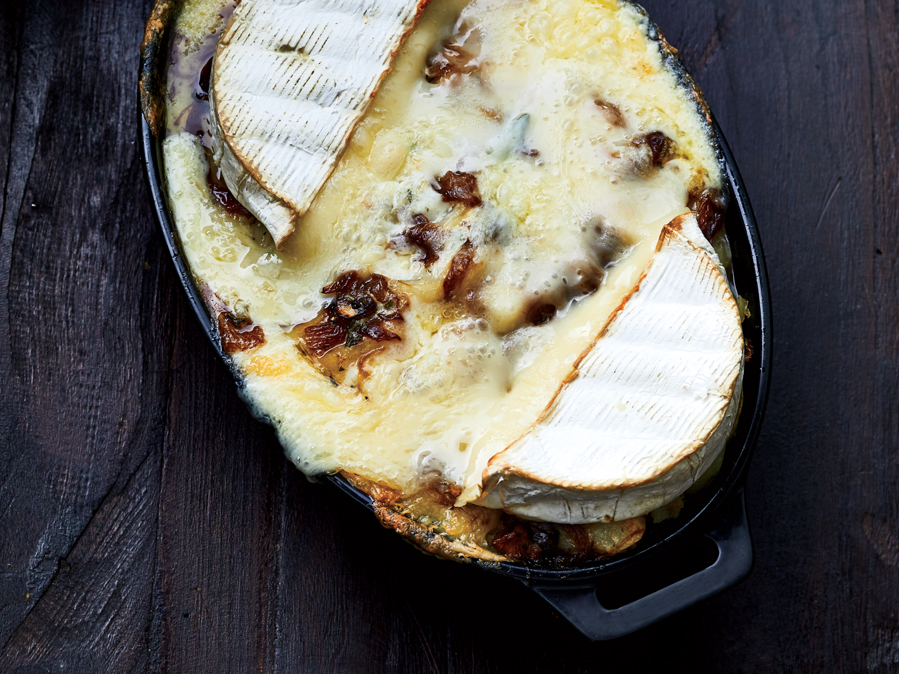

Tartiflette

D’Affinois cheese is incredibly creamy yet mild, buttery, and sweet, similar to a blend of Tomme and triple-crème Brie. Here, it’s melted over tender, soft potatoes and jammy caramelized onions; a glug of dry white wine helps to cut the richness and highlight the sweet flavor of the Fromager d’Affinois.
Ingredients
- 4 medium russet potatoes (about 2 1/4 pounds), peeled
- 2 tablespoons plus 1/2 teaspoon kosher salt, divided
- 1/2 cup rendered beef fat or unsalted butter
- 2 medium-size yellow onions, thinly sliced (about 5 cups)
- 1 1/2 teaspoons granulated sugar
- 2/3 cup dry white wine, divided
- 1 1/2 teaspoons thinly sliced fresh sage
- 1/2 teaspoon black pepper, divided
- 1/4 cup crème fraîche
- 1 (1-pound) Fromager d’Affinois round, at room temperature, halved crosswise, rind left on
Steps
- Place potatoes in a large pot, and add water to cover. Add 2 teaspoons salt, and bring to a boil over high. Reduce heat to medium-low, and simmer until potatoes are fork-tender, about 20 minutes. Drain and let potatoes cool 30 minutes. Cut potatoes crosswise into 1 / 4-inch-thick slices, and set aside.
- Meanwhile, preheat oven to 400°F. Heat a large skillet over medium-high. Add rendered beef fat, and heat until shimmering, about 2 minutes. Add onions and 1 1/2 teaspoons salt. Cook, stirring occasionally, until onions begin to brown, 10 to 12 minutes. Stir in sugar, and cook, stirring occasionally, until lightly browned, about 8 minutes. Add 1/3 cup wine. Cook, stirring and scraping bottom of skillet to loosen any browned bits, until wine has almost completely reduced and onions are golden and soft, about 6 minutes. Add remaining 1/3 cup wine, and cook, stirring occasionally, until onions are rich brown and jammy, 4 to 6 minutes. Stir in sage.
- Arrange half of potato slices in an even layer in a 1 1/2-quart oval soufflé dish or 10- x 7- x 1 1/2-inch baking dish. Sprinkle with 1 1/2 teaspoons salt and 1/4 teaspoon pepper. Top with half of the onion mixture (about 1/3 cup). Layer with remaining potatoes, remaining 1 1/2 teaspoons salt, and remaining 1/4 teaspoon pepper. Top with remaining onion mixture, and drizzle with any remaining drippings in skillet. Dot casserole with spoonfuls of crème fraîche, and arrange Fromager d’Affinois cheese halves (with rind) on top. Place soufflé dish on a rimmed baking sheet, and bake in preheated oven until bubbly and lightly browned, 20 to 30 minutes. Serve immediately.